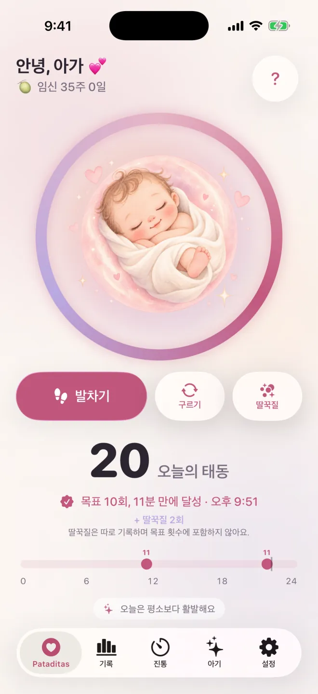

Pataditas / Pataditas 사용법
iPhone이나 Apple Watch로 아기 태동 세는 방법
Pataditas는 iPhone과 Apple Watch에서 쓰는 비공개 임신 일기예요. 느낀 움직임을 기록하면 앱이 시간과 움직임 유형을 저장해요. 이 안내서는 의학적 세기 처방이 아니라 실제 앱 사용 흐름을 설명해요.
네 단계로 움직임 기록하기
움직임 화면 열기
선택 사항인 개인 맞춤 설정은 마치거나 건너뛰어도 돼요. Plus 안내가 나타나면 닫고 ‘무료로 계속’으로 무료 세기를 이어 가세요.
한 번 눌러 기록하기
발차기, 구르기, 딸꾹질을 눌러요. 버튼마다 해당 움직임 유형이 바로 저장돼요. 딸꾹질은 일기에는 남지만 태동 묶음에는 포함되지 않아요.
발차기는 큰 그림을 눌러요
가운데 큰 그림을 한 번 누르면 발차기 1회가 기록돼요. 고를 움직임 모드도, 시작할 타이머도 없어요.
잘못 누른 기록 바로잡기
실수로 기록했다면 기록 직후 잠깐 나타나는 취소 버튼을 바로 누르세요.

Apple Watch에서 기록하기
Pataditas에는 함께 쓰는 Apple Watch 앱(watchOS 26 이상)이 있어요. 움직임이 느껴질 때마다 시계 화면을 누르고, 시계 페이스나 스마트 스택에 Pataditas를 추가해 빠르게 열어 보세요. 기록은 비공개 iCloud를 통해 iPhone 앱과 동기화돼요.
기록과 그래프가 보여 주는 것
무료 기록은 최근 7일을 보여 줘요. Plus에서는 임신 기간 전체 기록, 패턴 그래프, PDF 보고서가 더해져요. 비교는 직접 입력한 태동만 사용하므로, 빠진 기록이 있으면 결과가 달라질 수 있어요.
태동 10회 축하의 의미
Pataditas는 2시간 이내에 기록한 발차기와 구르기 10회를 하나로 묶어요. 건강 평가나 모두에게 해당하는 하루 목표가 아니에요. 담당 의료진의 안내를 따르세요.
태동 세기에 대한 안내는 서로 달라요
태동 세기에 대한 안내는 서로 달라요. Count the Kicks(미국)는 임신 28주부터(고위험이거나 아기가 둘 이상이면 26주부터) 태동 10회를 느끼는 데 걸리는 시간을 재 보라고 제안해요. NHS(영국)는 정해진 태동 횟수가 없고 반드시 셀 필요도 없지만, 아기의 평소 패턴을 알아 두라고 해요. 핵심은 둘 다 같아요. 아기가 평소보다 덜 움직이거나, 움직임이 멈추거나, 패턴이 달라지면 즉시 조산사, 의사 또는 산부인과에 연락하라는 거예요. NHS는 한밤중에도 전화하고 다음 날까지 기다리지 말라고 덧붙여요. Pataditas는 느끼신 움직임을 기록할 뿐이니, 어떤 방법이 좋을지 담당 의료진에게 물어보세요.
더 읽기: 아기 태동 세기, 언제 시작하고 무엇이 정상이며 언제 연락할까요 →
기록은 비공개로 유지돼요
태동 기록은 오프라인에서도 작동해요. iCloud를 켜면 기록이 내 개인 iCloud 계정을 통해 동기화돼요. Pataditas 계정은 필요 없고, 개발자는 임신 일기를 읽을 수 없어요.
작성자, 출처, 범위
Kaelux 설립자이자 Pataditas를 만드는 Luis Angel Lucatero Villanueva가 썼어요. 이 안내서는 제품 및 일반 정보이며 의학적 조언이 아니에요. 의료 전문가의 검토를 받지 않았으며, 의학적 설명은 아래 출처(영어)에서 가져와 2026년 10월 21일에 마지막으로 확인했어요. 오류를 발견하셨나요? hola@rutmia.com으로 알려 주세요.